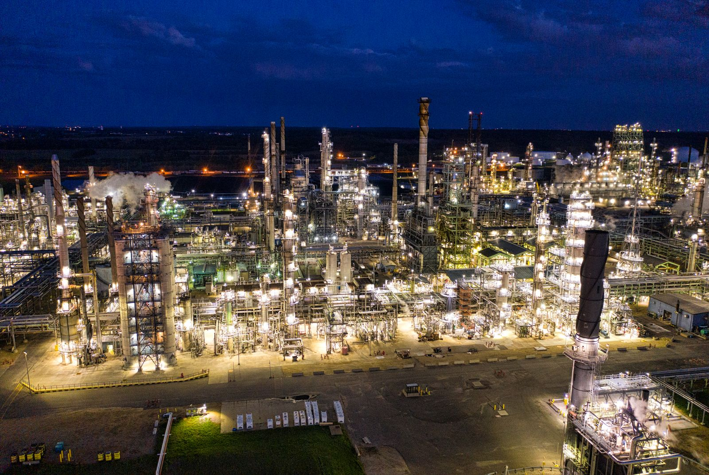

EPCC stands for Engineering, Procurement, Construction and Commissioning. In the field it means something plainer: one party is answerable for the whole journey — the drawings, the equipment, the works on the ground and the handover of a plant that runs. This note unpacks what that responsibility is made of, and what it looks like when it is done properly in Indonesia.
EPCC, defined
- Engineering — the design scope: civil, mechanical, electrical and instrumentation drawings, specifications and calculations that turn a requirement into a buildable package.
- Procurement — sourcing and purchasing equipment and materials against those specifications, and managing the vendors and logistics behind them.
- Construction — the physical works on site, executed under one management structure: civil, mechanical, electrical and piping.
- Commissioning — testing and starting the completed works until they perform to specification, then handing them over with the documentation that proves it.
The format matters more than the letters. When an owner splits the same scope across separate contracts, every interface between them — design against supply, supply against installation — becomes the owner's problem to manage. EPCC moves those interfaces inside one contract, where they are ours to coordinate and ours to fix.
Why the format wins
A single point of responsibility changes behaviour on both sides of the table. The contractor cannot hand a delay to the vendor, or a design gap to the site team, because all three report to the same management line. The owner negotiates one scope, one schedule and one standard instead of arbitrating between three suppliers whose contracts blame each other. And because commissioning sits inside the same contract, construction decisions are made by people who will still be there when the plant has to run — not by a party that leaves at mechanical completion.
At PT Maharani Prima that discipline is written into the operating standard the phases are managed against: On Schedule. On Budget. On Quality. On Safety. Four commitments, one signature.
Where it shows up in Indonesian energy
The same delivery format carries five capability lines: mining & hauling, wellpad & earth works, surface facility, HV & MV transmission and power plant. It also carries the technology we deliver as a working plant — Huawei microgrids, data center facilities and smart PV, and Selerys cloud seeding systems arrive as hardware and leave as commissioned, documented assets wrapped in the full EPCC scope. See the products line-up for how that wrap is specified.
The record, in numbers
An EPCC commitment is only as credible as its record. Ours is documented project by project on this site; the summary:
| Wellpads | 220 delivered in the Rokan Block |
|---|---|
| Transmission | 550 km of HV/MV lines energized |
| Power plants | 9 commissioned |
| Pipelines | 130 km constructed |
| Earthworks | 3.6 million m³ moved |
| Safety | 5,402,696 safe man-hours without a lost injury |
The work spans 29 documented site locations across Sumatra, Java, Kalimantan, Sulawesi, Maluku, Nusa Tenggara and Bali, delivered since the company was established on 6 February 2012. The licenses behind it — SBUJK, SBUJPTL, SKUP Migas and EBTKE — and the ISO 9001, 14001, 45001 and 37001 certifications are documented on the company page, and the projects themselves on projects. As-built documentation is maintained across four disciplines, because the handover is part of the scope, not an afterthought.
The mission, verbatim: “To be the world-class EPCC — delivering world-class standards of project planning, management and execution for our clients.”

How to qualify an EPCC contractor
Whether you evaluate us or anyone else, the checklist is the same — and it is checkable, which is the point:
- Licenses held and current — SBUJK and SBUJPTL for construction, SKUP Migas for oil & gas work, EBTKE for energy. Ask for the certificates, not the claims.
- Certifications — ISO 9001, 14001, 45001 and 37001 evidence quality, environment, safety and anti-bribery management as audited systems, not slogans.
- Sector track record — delivered work in your sector, with clients and locations that can be verified.
- Safety record — safe man-hours and HSSE history, stated in numbers and traceable to the clients that issued the awards.
- Vendor registrations — registration with the operators and state players who pre-qualify contractors: PLN, Indonesia Power, PJB, Pertamina, PGAS Solution, SKK Migas and others.
- As-built discipline — documentation maintained across engineering disciplines, because a plant without records is a plant you cannot operate or audit.
Every one of these is documented on this site — that is what the dossier format is for. The rest of this note explains what happens after you sign.
Frequently asked
What does EPCC stand for?
Engineering, Procurement, Construction and Commissioning — the four phases one contractor takes responsibility for under a single contract.
What is the difference between EPC and EPCC?
The commissioning commitment is made explicit. EPC scope can end at mechanical completion, while EPCC carries the works through testing and start-up to a performing, documented handover. In Indonesian practice the terms are often used interchangeably — read the scope of work, not the acronym.
How long does an EPCC project take?
There is no fixed rule. Permits, procurement lead times, civil works and commissioning drive the schedule, and a wellpad campaign, a transmission line and a power plant sit in very different ranges. Scope, site and permits decide — which is why schedule discipline is managed, not assumed.
Which licenses must an EPCC contractor in Indonesia hold?
It depends on the sector: SBUJK and SBUJPTL certify construction capability, SKUP Migas covers oil & gas work, and EBTKE covers renewable energy. ISO certifications such as 9001, 14001, 45001 and 37001 evidence the management systems behind the license. Ours are listed on the company page.